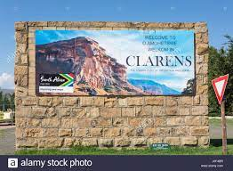

Clarens, Free State, South Africa
Dine out at one of the local restaurants: either Clementines Restaurant and Bar; Addo's Fine Dining; The Courtyard Bakery and Cafe; or The Posthouse.Visit Bibliophile: a popular stop: boostore collection, music collection, the Artist's Corner to see if I cannot get a new SandArt collection. Hiking: through the Clarens Conservancy or Golden Gate Highlands National Park. Go White Water Rafting: at the local adventure zone, Clarens Xtreme, and maybe a little quad biking while we are at it. Embark on a hot air balloon ride: to experience the breathtaking views and the scenery of the Maluti Mountains.

Dutch
Being quite good in Afrikaans, the third most widely spoken language in South Africa and a language known as the descendent of Dutch, I would love to learn Dutch, which has about 23 million native speakers. Dutch is spoken in Netherlands, Belgium French Flanders and Suriname amongst others. It is widely known that Dutch is a conservative language. I would also love to better understand the Dutch culture, more especially the sayings. Dutch being one of the easiest language to learn for English speakers, it ought to be fun to learn where the
de and
het go in each sentence. And lastly, Dutch sounds so cool to speak, I read somewhere that it is a language that gives both your throat and tongue a good workout. Fun fact about the Dutch language: it like German, has the ablility of forming compounds of potentially limitless length. The longest word contains 60 letters.
| English |
Dutch |
Idiom/Phrase meaning |
| As though an angel is pissing on your tongue |
Alsof er een engeltje op je tong piest |
Used to express satifaction after eating a delicious meal or drinking a tasty beverage. |
| Now the monkey comes out of the sleeve |
Nu komt de aap uit de mouw |
'Letting the cat out of the bag'. Dutch believes that a monkey is a better stand-in for classified information, and that this mischievous animal escapes from a sleeve during revelatory moments. |
| It sits like a mustache |
Het zit wel snor |
Idiom expresses patience or calmness.In other words 'dont worry' |
| Make that the cat wise |
Maak dat de kat wiks |
This means that someone is telling something very unbelievable or bizzare that even the cat won't beleive it. |
Historical places in Kimberley, Northern Cape, South Africa
I am actually not from Kimberley, I only went to boarding school there (Grade 8-Grade 12). I was born in Danielskuil, raised in Lime Acres but now live in Groenwater, all little towns and villages in the Northern Cape. But I will be mentioning historical places in Kimberley as it has a much wider variety of choices than the small town and villages previously mentioned.
The Big Hole
The Big Hole is the deepest hole in the whole that was made by men, 463m wide, surface area of 17 hectares with depth of about 215metres and filled with 40% of water. You get to see a real diamonds in a diamond vault. The water in the hole is a turquiose color from (apparently) the aftereffects which makes it Insta-worthy.

Ernest Oppenheimer Memorial Gardens and Diggers Fountain
The bust of Oppenheimer, in marble, sits proudly overlooking the Rose Garden and Diggers Fountain. The presence of the fountain in the dry mining mining city is intended to be a symbol of hard work, economic success and good government. The Gardens are a memorial to the late Sir Ernest Oppenhemer, a diamond magnate and the first elected mayor of the municipality of the city of Kimberey when Beaconsfield and Kimberley were combined into a city in 1912.

The Honoured Dead Memorial
The Honoured Dead Memorial is situated at the meeting point of 5 roads, and commenmorates those who died defending the city during the 124 day Siege of Kimberley in the Anglo-Boer War of 1899-1902. The Neried Monument at Xanthus, Greece greatly influenced the design of this memorial.